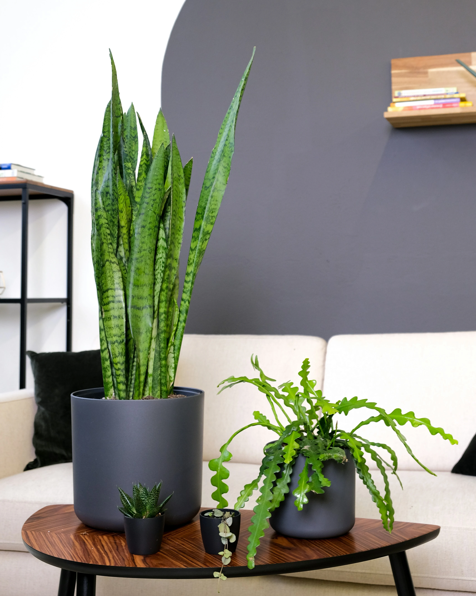
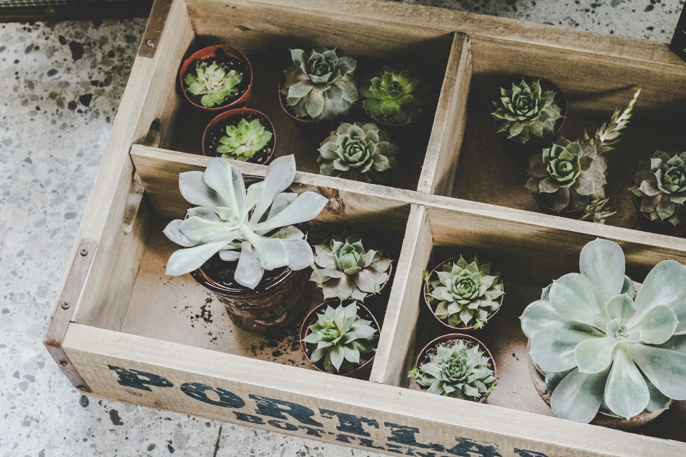

A Plantnoon'S LOG
공간을 위한 큐레이션
당신의 공간에 가장 어울리는 초록을 만나보세요.

가족의 시간을 품는, 아레카야자
넓은 공간을 풍성하게 채워주는 아레카야자는 가족이 함께하는 거실에 생명력과 편안함을 더합니다. 공기 정화 능력은 물론, 이국적인 분위기까지 연출해주는 최고의 선택입니다.

밤의 위로가 되는, 산세비에리아
산세비에리아는 밤 동안 산소를 내뿜어 숙면을 돕습니다. 빛이 부족한 환경에서도 잘 자라, 하루의 끝을 마무리하는 가장 고요한 공간인 침실에 완벽한 위로를 선사합니다.
집중력을 깨우는, 스킨답서스
작은 공간에서도 잘 자라는 스킨답서스는 당신의 책상 위 작은 숲이 되어줍니다. 지친 눈에 휴식을 주고, 맑은 공기로 집중력을 높여주어 창의적인 순간들을 함께합니다.



Chapter 1.
The Arrival
단순한 배송이 아닌, 새로운 가족을 맞이하는 설레는 순간입니다. 모든 과정은 식물의 안전과 당신의 기대를 위해 세심하게 설계되었습니다.
Chapter 2.
The Unfurling
상자 속 작은 숲이 마침내 모습을 드러냅니다. 농장에서 막 도착한 듯한 싱그러움, 건강한 잎사귀 하나하나가 오후의 식물의 약속입니다.
Chapter 3.
The Light
당신의 공간 속 가장 좋은 자리를 찾아주세요. 빛과 바람, 공기는 식물에게 최고의 선물이자 당신에게는 살아있는 예술 작품이 됩니다.
당신의 초록빛 성장 파트너
식물 키우기, 더 이상 어렵지 않아요. 오후의 식물이 성공적인 반려식물 라이프를 함께합니다.
01
AI 식물 진단
시들거나 아파 보이는 식물, 사진만 찍어 올리면 AI가 상태를 분석하고 해결책을 제시합니다.
02
맞춤 성장 가이드
나의 식물을 등록하면 물주기, 분갈이 시기 등 최적의 성장 스케줄 알림을 보내드려요.
03
오후의 식물 커뮤니티
나의 식물 성장일지를 공유하고 다른 집사들의 꿀팁을 얻어보세요. 함께 키우는 즐거움이 커집니다.